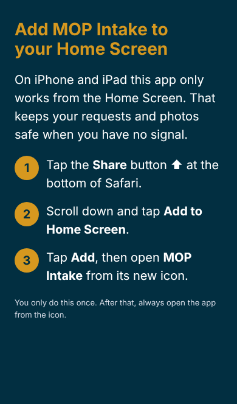
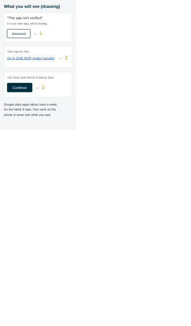
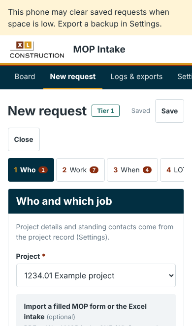
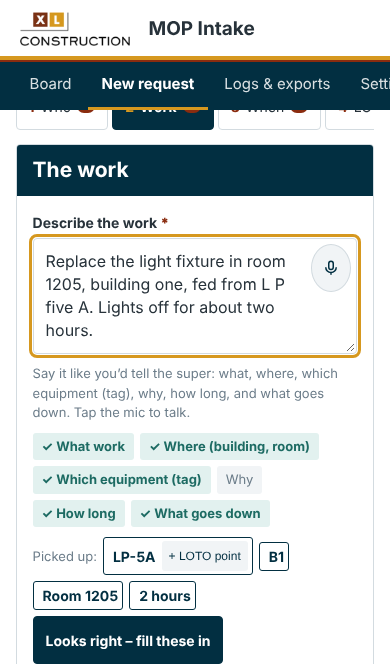
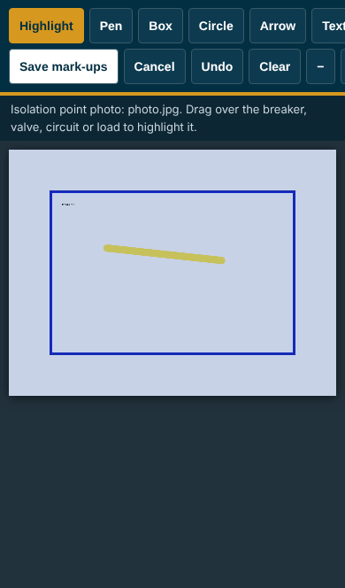
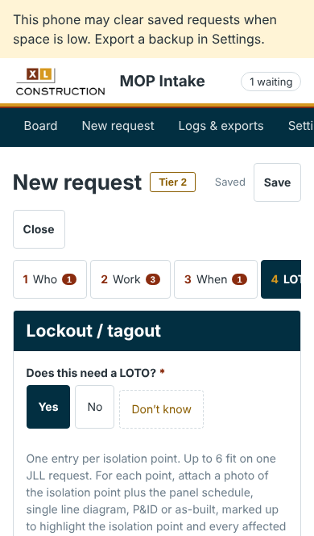
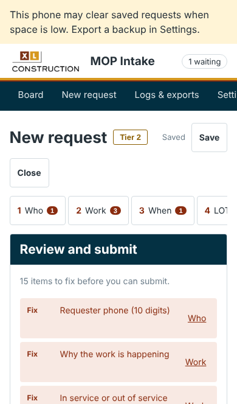
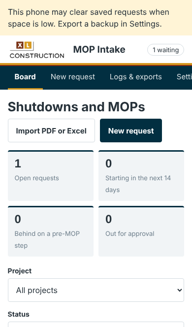

1Put the app on your Home Screen
On iPhone or iPad, open the link in Safari. Tap Share, then Add to Home Screen, then Add. From now on, open MOP Intake from its icon.
On Android, Chrome offers Install app. Tap it, or use the ⋮ menu → Install app.

On iPhone the app only works from the Home Screen icon. That keeps your requests and photos safe.
2Sign in with Google
Tap Sign in to sync. Google shows a warning because the app is still in testing. That is expected.
- Tap Advanced.
- Tap Go to GNE MOP Intake (unsafe).
- Tick Drive and Sheets if asked, then tap Continue.

Google asks again about once a week, and after an hour the app asks you to tap Sign in to sync. Your work on the phone is never lost while you wait.
3Start a request
Tap New request. Pick the project. Your name, company and crew fill in from last time.
Have a filled MOP form (PDF or Word) or the Excel intake? Tap Choose file to import it instead.

4Describe the work – say it or type it
Say it like you'd tell the super: what, where, which equipment, why, how long and what goes down. Each one turns green when the app hears it.
Tap the mic in the box, or the mic on your phone keyboard. Tags like “L P five A” become LP-5A.
Tap Looks right – fill these in. Tap + LOTO point on a tag to make it an isolation point.

5LOTO points: photo and mark-up
For each isolation point, tap Add photo or file. Take a photo of the breaker or valve tag, or add the panel schedule.
The mark-up opens by itself. Drag to highlight the point and the loads. Tap Save mark-ups, then tick what it shows.

6Not sure? Tap “Don't know”
On the key questions you can tap Don't know. You can still submit. The XL PM answers it before the MOP goes out for approval.

7Review and submit
The app fills the other screens from the library. Check them. Anything in red needs fixing. Tap a red item to jump to it.
Tap Submit. The request is saved on the phone first.

8“N waiting” and Sync now
The top bar shows how many changes are waiting to go to Drive, the tracker and Smartsheet. They go by themselves when you have signal. You can also tap Sync now.

No signal in the basement? Keep working. Nothing is lost.
9After the job
On the request page, tick Work done, then the close-out list: locks off, alarms restored, fire/life safety restored, fire watch ended, hot work permit closed, QA release (cGMP), users confirm.
Answer the three after-job questions. You can send them to JK for the library.